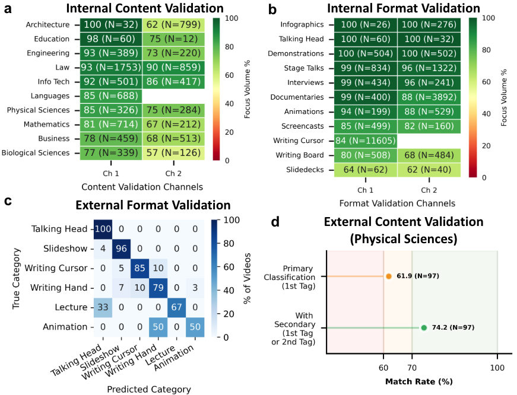
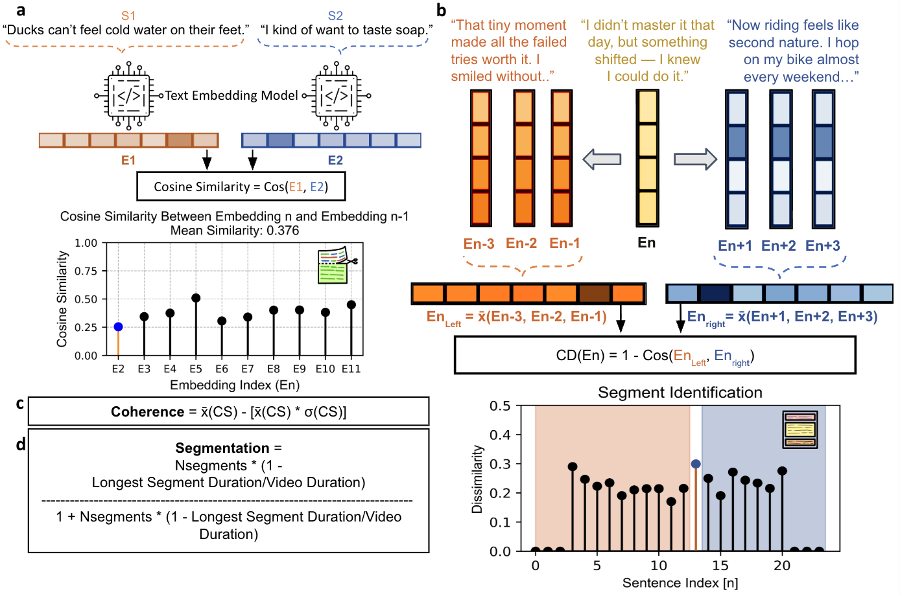
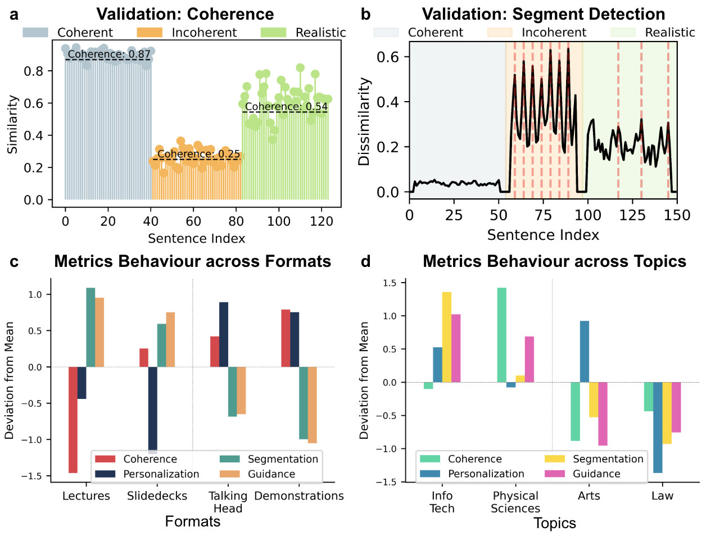
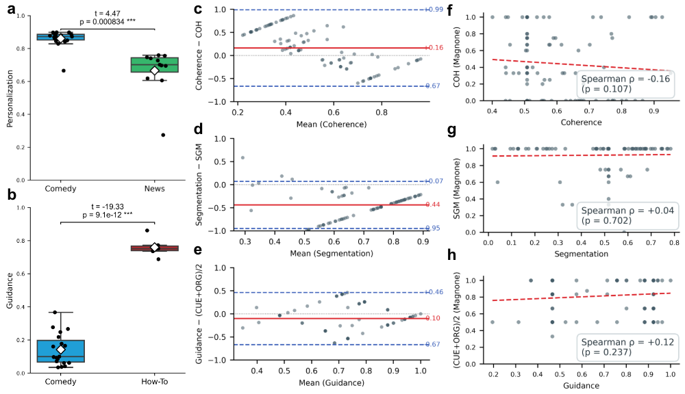
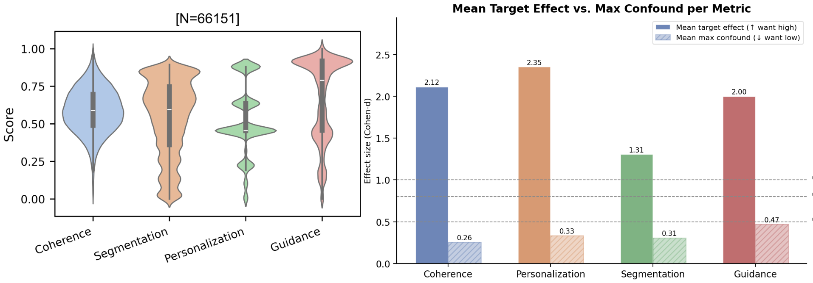

This page summarizes the methods and validation checks behind the findings — how topic and format labels were checked against ground truth, how coherence, segmentation, guidance and personalization are computed, how those metrics were validated, and how the 40 experiment videos were selected from the corpus.
Topic and format labels were assigned by a large language model (Gemini 2.0 Flash) from transcripts (topic) and sampled video frames (format), using structured hierarchical taxonomies. Each label was scored independently on a 0–100 relevance scale rather than forced into a single exclusive category, so a video could score highly on more than one topic or format.
Internal validation used a focus-volume check: for channels expected to focus on one topic or format, what percentage of their videos actually got that label?
All 19 topic-validation channels and all 26 format-validation channels exceeded 50% focus volume (binomial tests against chance, p = 1.91×10⁻⁶ and p = 1.49×10⁻⁸ respectively). Format channels averaged 87% ± 13.2% focus volume.
External validation compared labels against two independently published, human-annotated reference datasets. Against a 97-video physical-sciences dataset, the model's topic label matched in 61.9% of videos as the top-ranked tag, rising to 74.2% when either of the top two ranked tags counted as a match. Against a human-annotated format dataset, format labels agreed 88.14% ± 2.85% of the time.

Each transcript was split into sentences and embedded with Google's text-embedding-004 model (768-dimensional vectors). Coherence and segmentation are computed directly from these embeddings; guidance and personalization are scored by a structured large-language-model prompt. The four were analyzed separately rather than combined into one composite score, since each was expected to relate differently to viewer experience, learning and viewership.
mean(CS) − mean(CS) × std(CS), where CS is adjacent-sentence cosine similarity. Rewards high average topical continuity, penalizes large fluctuations.
Text-tiling over local embedding windows (3 sentences each side) detects candidate section boundaries; the final score balances the number of detected segments against how much one segment dominates the video.
Mean of two LLM-scored sub-principles, signalling and pre-training, merged because they were highly correlated across the corpus (r = 0.81) and reflect the same underlying construct.
LLM-scored degree of conversational phrasing, direct address, relatable examples and learner-oriented framing — explanatory style, not production value or entertainment value.

Perturbation test. Three synthetic paragraphs were built with deliberately varying sentence-level structure — coherent (minimal randomness), incoherent (highly disjointed) and realistic (natural thematic progression). The coherence metric recovered the expected ordering exactly: coherent texts scored 0.87 with zero detected segments, incoherent texts scored 0.25 with many detected segments, and realistic texts scored 0.54 with evenly spaced segments.
Known-contrast genre comparisons. Channels with genres expected to differ on a given metric were compared directly:
Comedy vs. news personalization: Welch's t = 4.47, p = 8.34×10⁻⁴. How-to vs. comedy guidance: Welch's t = −19.33, p = 9.1×10⁻¹².
External benchmark. Scores were also compared against a 99-video human-annotated physical-chemistry dataset (Magnone et al. 2023). Agreement was weak (coherence ρ = −0.16, segmentation ρ = +0.04, guidance ρ = +0.12, all p > 0.1), which the paper attributes to a genuine methodological gap rather than treating it as disqualifying: our scores are continuous, LLM/embedding-derived and cross-domain, while the reference annotations are binary, consensus-coded and specific to one subject area. The metrics' validity for this study rests on the perturbation tests, genre comparisons and experimental learning outcomes, not on this external benchmark alone.


Before normalizing, coherence was trimmed to its 0.3–99.9 percentile range and personalization was hard-clipped to [0.30, 0.949]; guidance and segmentation were left untrimmed. All four were then Yeo-Johnson transformed, Z-scored and Min-Max scaled to [0, 1].
Candidate videos were restricted to instructional formats, 6–10 minutes long, with entertainment/gaming/children's channels and non-instructional formats (vlogs, panels, skits, interviews) excluded. Pairs were then built separately for each metric — processed in the order guidance, segmentation, coherence, personalization, with videos already used in one pair withheld from later passes — requiring topical similarity ≥ 0.90 and matched duration, speech rate, publication year and scene-cut rate.
Each candidate pair needed a target-dimension effect of at least d = 0.60 (Cohen's d analogue) while every non-target dimension stayed below d = 0.50 (relaxed to 0.65 for guidance). A maximum-weight matching algorithm then selected the best non-overlapping set of pairs. In the final 40-video set (5 high / 5 low per dimension), mean target-dimension effect sizes ranged from d = 1.31 to 2.35, against d = 0.26 to 0.47 on non-target dimensions — confirming pairs varied mainly along the dimension they were selected for.

For each of the 40 videos, a large language model generated a 10-question, 4-option multiple-choice quiz, manually reviewed afterward for accuracy and alignment with the video content. To check that questions weren't answerable from prior knowledge alone, a separate baseline group answered the quizzes without watching the videos first; chance performance was 25%, and video pairs whose questions scored too close to chance for either member were re-examined before use.
Participant characteristics for the 1,378-student survey behind Fig. 1:
| Characteristic | Breakdown |
|---|---|
| Age | mean 26.2 (SD 8.8), median 23, range 16–74 |
| Sex | 59.5% female · 40.5% male |
| Native language | 87.4% English |
| Academic level | 70.5% undergraduate · 18.1% master's · 4.6% doctoral |
| Country of origin | 46.2% US · 25.8% UK · 15.3% Canada |
Read how these methods translate into the paper's four studies, or browse the 63,505-video corpus directly.
← Back to findings Explore the corpus →